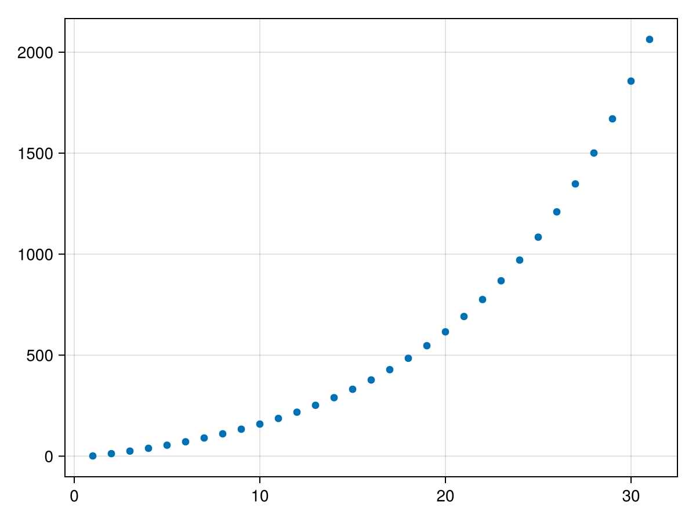

Getting started with a simple exponential growth model
In this example, we will set up an embarrassingly simple example to demonstrate Terrarium's model interface. Our model will have 1-dimensional exponential dynamics with a constant offset
\[\frac{du}{dt} = \alpha u + c + F(t)\]
for an arbitrary prognostic variable $u$. For the sake of this demonstration we will treat the offset $c$ as an auxiliary/diagnostic variable even though it is constant in time. $F(t)$ is an external forcing that we apply.
using TerrariumWe begin by defining our model struct that subtypes Terrarium.AbstractModel:
A "model" in Terrarium is a subtype of Terrarium.AbstractModel and is a struct type consisting of
gridwhich defines the discretization of the spatial domaininitializerwhich is responsible for initializing state variables- further fields that define processes, dynamics and submodels
When we follow the advised naming notations of grid and initializer we inherit default methods from Terrarium.AbstractModel such as get_grid and get_initializer. For more complex models we might need to implement custom overrides of initialize!(state, ::Model, ::Initializer) to initialize model states.
What is a "grid"?
The grid defines the spatial discretization. Our grids are based on those of Oceananigans.jl (and SpeedyWeather.jl/RingGrids.jl) in order to take advantage of their capabilities for device-agnostic parallelization.
As mentioned in the documentation on grids, Terrarium currently provides two grid types:
ColumnGridis a set of laterally independent vertical columns with dimensions $(x, y, z)$ where $x$ is the column dimension, $y=1$ is constant, and $z$ is the vertical axis,ColumnRingGridrepresents a global (spherical) grid of independent, vertical columns where the spatial discretization in the horizontal direction is defined by aRingGrids.AbstractGrid.
In both cases we need to specify the vertical discretization via an UniformSpacing, ExponentialSpacing or PrescribedSpacing.
Initializer and Boundary Conditions
For our basic example here the default initializer (which does nothing) will suffice, and we won't have to define a custom one.
Boundary conditions are specified by passing Oceananigans BoundaryCondition types to initialize. In the case of a linear ODE, however, no boundary conditions are required.
What's our grid?
For our current example, we are defining a simple linear ODE without any spatial dynamics, so we can get away with just a single column with one vertical layer. We can define it like so:
grid = ColumnGrid(CPU(), Float64, UniformSpacing(N = 1))ColumnGrid{Float64} on CPU() with
1×1×1 RectilinearGrid{Float64, Periodic, Flat, Bounded} on CPU with 1×0×1 halo
├── Periodic x ∈ [0.0, 1.0) regularly spaced with Δx=1.0
├── Flat y
└── Bounded z ∈ [-0.1, 0.0] variably spaced with min(Δz)=0.1, max(Δz)=0.1Defining the model
We start by defining a struct for our model that inherits from AbstractModel and consists of four properties: the spatial grid, an initializer, a single AbstractProcess defining the dynamics, which we will also implement below and the timestepper used to step the model forward in time.
@kwdef struct LinearDynamics{NF} <: Terrarium.AbstractProcess{NF}
"Exponential growth rate"
alpha::NF = 0.01
"Constant offset"
c::NF = 0.1
end@kwdef struct ExpModel{NF, Grid <: Terrarium.AbstractLandGrid{NF}, Dyn, Init, TS <: Terrarium.AbstractTimeStepper} <: Terrarium.AbstractModel{NF, Grid}
"Spatial grid on which state variables are discretized"
grid::Grid
"Linear dynamics process"
dynamics::Dyn = LinearDynamics()
"Model initializer"
initializer::Init = DefaultInitializer(eltype(grid))
"Time stepper (e.g. `ForwardEuler`, `Heun`, or `IMEX`)"
timestepper::TS = ForwardEuler(eltype(grid))
endDefining the model behavior
Now, we want to define our intended model behavior. For this, we need to define the following methods:
variables(::Model)returns a tuple of variable metadata declaring the state variables. As defined in the documentation on state variables, variables must be one of three types:prognostic,auxiliary(sometimes referred to as "diagnostic"), orinput. Prognostic variables fully characterize the state of the system at any given timestep and are updated according to their tendencies (i.e. $u$ in our example). Tendencies are automatically allocated for each prognostic variable declared by the model. In this example we will treat the offset $c$ as an auxiliary variable, though we could also just include it as a constant in the tendency computations.compute_auxiliary!(state, ::Model)computes the values of all auxiliary variables (if necessary) assuming that the prognostic variables of the system in state are available for the current timestep.compute_tendencies!(state, ::Model)computes the tendencies based on the current values of the prognostic and auxiliary variables stored in state.
So, let's define those:
Terrarium.variables(::ExpModel) = (
Terrarium.prognostic(:u, XY(), desc = "Exponential growth variable"),
Terrarium.auxiliary(:c, XY(), desc = "Constant offset for growth"),
Terrarium.input(:F, XY(), default = 0.0, desc = "External forcing"),
)Here, we defined our three variables with their names as a Symbol and whether they are 2D variables (XY) on the spatial grid or 3D variables (XYZ) that also vary along the vertical z-axis. Here we are considering only a simple scalar model so we choose 2D (XY), bearing in mind that all points in the X and Y dimensions of ColumnGrid are independent of each other.
We also need to define compute_auxiliary! and compute_tendencies! as discussed above. We will use here a pattern which is commonly employed within Terrarium: we unpack the grid and process from the model and forward the method calls to more specialized ones defined for the LinearDynamics process. The compute_auxiliary! and compute_tendencies! of AbstractProcesses follow the signatures (state, grid, processes...), as you see here:
function Terrarium.compute_auxiliary!(state, model::ExpModel)
compute_auxiliary!(state, model.grid, model.dynamics)
return nothing
endfunction Terrarium.compute_tendencies!(state, model::ExpModel)
compute_tendencies!(state, model.grid, model.dynamics)
return nothing
endNote that, when implementing models within the Terrarium module itself, the Terrarium. qualifier in the definition is not needed.
Implementing the dynamics
Next, we define the functions that compute the actual dynamics. In order to do this, we need to know a little about how the variables we just defined are handled in our StateVariables. The StateVariables hold all prognostic and auxiliary variables, their tendencies and closures and additional inputs and forcings in seperate NamedTuples. Note that Terrarium also defines shortcuts such that, e.g. in our example, both state.prognostic.u and state.u would work.
With that in mind, let's define the methods:
function Terrarium.compute_auxiliary!(state, grid, dynamics::LinearDynamics)
return state.auxiliary.c .= dynamics.c
endfunction Terrarium.compute_tendencies!(state, grid, dynamics::LinearDynamics)
return let u = state.prognostic.u,
∂u∂t = state.tendencies.u,
α = dynamics.alpha,
c = state.auxiliary.c,
F = state.inputs.F
∂u∂t .= α .* u .+ c .+ F
end
endThese example compute functions are really the simplest possible, for more complex operations, we would need to define them via KernelAbstractions kernels. We will not go into further details on that in this notebook, as it is treated in another example.
However, now we have everything our model needs and we can finally use it!
Running our model
First, we will define our initial conditions.
User-specified Field initializers passed to initialize can be provided in any form supported by Oceananigans.set! (see the corresponding Oceananigans documentation), including constants, arrays, and functions of the form (x,z) -> val:
initializers = (u = 1.0,)(u = 1.0,)Then, we define our forcing. For that, our time-dependent forcing is loaded in from a Oceananigans.FieldTimeSeries. If you want to load the forcing from e.g. a netCDF file you can use the RasterInputSource that is based on Rasters.jl. In the concrete case, we'll just generate a random forcing:
using Random
Random.seed!(1234) # set random seed
t_F = 0:1:300; #seconds
F = FieldTimeSeries(grid, XY(), t_F);
F.data .= randn(size(F));
input = InputSource(grid, F, name = :F)FieldInputSource{Float64, (:F,), XY{Center, Center}, FieldTimeSeries{Center, Center, Nothing, Oceananigans.OutputReaders.Clamp, Oceananigans.OutputReaders.InMemory{Nothing}, Tuple{Colon, Colon, Colon}, OffsetArrays.OffsetArray{Float64, 4, Array{Float64, 4}}, Oceananigans.Grids.RectilinearGrid{Float64, Oceananigans.Grids.Periodic, Oceananigans.Grids.Flat, Oceananigans.Grids.Bounded, Oceananigans.Grids.StaticVerticalDiscretization{OffsetArrays.OffsetVector{Float64, Vector{Float64}}, OffsetArrays.OffsetVector{Float64, Vector{Float64}}, OffsetArrays.OffsetVector{Float64, Vector{Float64}}, OffsetArrays.OffsetVector{Float64, Vector{Float64}}}, Float64, Float64, OffsetArrays.OffsetVector{Float64, StepRangeLen{Float64, Base.TwicePrecision{Float64}, Base.TwicePrecision{Float64}, Int64}}, Nothing, CPU, Oceananigans.Grids.GridSize{1, 1, 1, 1, 0, 1}}, Float64, Oceananigans.BoundaryConditions.FieldBoundaryConditions{Oceananigans.BoundaryConditions.BoundaryCondition{Oceananigans.BoundaryConditions.Periodic, Nothing}, Oceananigans.BoundaryConditions.BoundaryCondition{Oceananigans.BoundaryConditions.Periodic, Nothing}, Nothing, Nothing, Nothing, Nothing, Nothing, Nothing, Nothing}, StepRangeLen{Float64, Base.TwicePrecision{Float64}, Base.TwicePrecision{Float64}, Int64}, Nothing, Nothing, @NamedTuple{}}, Unitful.FreeUnits{(), NoDims, nothing}}(XY{Center, Center}(Center(), Center()), , 1×1×1×301 FieldTimeSeries{Oceananigans.OutputReaders.InMemory} located at (Center, Center, ⋅) on CPU
├── grid: 1×1×1 RectilinearGrid{Float64, Periodic, Flat, Bounded} on CPU with 1×0×1 halo
├── indices: (:, :, :)
├── time_indexing: Clamp()
├── backend: InMemory()
└── data: 3×1×1×301 OffsetArray(::Array{Float64, 4}, 0:2, 1:1, 1:1, 1:301) with eltype Float64 with indices 0:2×1:1×1:1×1:301
└── max=3.22591, min=-3.40253, mean=-0.0934279)Here we constructed a 2D (XY()) time series on our grid at times t_F with random normal distributed data and defined our InputSource for our model based on it.
Then, we construct our model from the chosen grid. The timestepper is configured on the model itself; here we choose the second-order Heun method with a timestep of 1 second via the timestepper keyword.
model = ExpModel(grid; timestepper = Heun(Δt = 1.0))ExpModel{Float64} on CPU()
├── grid: ColumnGrid with dimensions (1, 1, 1)
├── dynamics: Main.var"##338".LinearDynamics{Float64}
├── initializer: DefaultInitializer{Float64}
├── timestepper: Heun{Float64}
We now can initialize our model, i.e. we run all pre-computation, and initialize a numerical integrator for our model by passing it to initialize along with our input/forcing data.
integrator = initialize(model; inputs = input, initializers)Integrator of Main.var"##338".ExpModel{Float64, ColumnGrid{Float64, CPU, Oceananigans.Grids.RectilinearGrid{Float64, Oceananigans.Grids.Periodic, Oceananigans.Grids.Flat, Oceananigans.Grids.Bounded, Oceananigans.Grids.StaticVerticalDiscretization{OffsetArrays.OffsetVector{Float64, Vector{Float64}}, OffsetArrays.OffsetVector{Float64, Vector{Float64}}, OffsetArrays.OffsetVector{Float64, Vector{Float64}}, OffsetArrays.OffsetVector{Float64, Vector{Float64}}}, Float64, Float64, OffsetArrays.OffsetVector{Float64, StepRangeLen{Float64, Base.TwicePrecision{Float64}, Base.TwicePrecision{Float64}, Int64}}, Nothing, CPU, Oceananigans.Grids.GridSize{1, 1, 1, 1, 0, 1}}}, Main.var"##338".LinearDynamics{Float64}, DefaultInitializer{Float64}, Heun{Float64}} with timestepper Heun{Float64}(1.0)
├── Current time: 0.0
├── StateVariables{Float64}(clock = Clock{Float64, Float64}(time=0 seconds, iteration=0, last_Δt=Inf days), prognostic = (:u,), auxiliary = (:c,), inputs = (:F,), namespaces = (), timestepper_cache = HeunCache)
We can advance our model by one step via the timestep! method:
timestep!(integrator)
integrator.state.u1×1×1 Field{Center, Center, Nothing} reduced over dims = (3,) on Oceananigans.Grids.RectilinearGrid on CPU
├── grid: 1×1×1 RectilinearGrid{Float64, Periodic, Flat, Bounded} on CPU with 1×0×1 halo
├── boundary conditions: FieldBoundaryConditions
│ └── west: Periodic, east: Periodic, south: Nothing, north: Nothing, bottom: Nothing, top: Nothing, immersed: Nothing
└── data: 3×1×1 OffsetArray(::Array{Float64, 3}, 0:2, 1:1, 1:1) with eltype Float64 with indices 0:2×1:1×1:1
└── max=2.08606, min=2.08606, mean=2.08606But wait there's more! What if we want to actually save the results?
The integrator data structure implements the Oceananigans model interface, so we can also use it to set up a Simulation (for more details, see here):
sim = Simulation(integrator; stop_time = 300.0, Δt = 1.0)Simulation of ModelIntegrator{Float64, CPU, ColumnGrid{Float64, CPU, Oceananigans.Grids.RectilinearGrid{Float64, Oceananigans.Grids.Periodic, Oceananigans.Grids.Flat, Oceananigans.Grids.Bounded, Oceananigans.Grids.StaticVerticalDiscretization{OffsetArrays.OffsetVector{Float64, Vector{Float64}}, OffsetArrays.OffsetVector{Float64, Vector{Float64}}, OffsetArrays.OffsetVector{Float64, Vector{Float64}}, OffsetArrays.OffsetVector{Float64, Vector{Float64}}}, Float64, Float64, OffsetArrays.OffsetVector{Float64, StepRangeLen{Float64, Base.TwicePrecision{Float64}, Base.TwicePrecision{Float64}, Int64}}, Nothing, CPU, Oceananigans.Grids.GridSize{1, 1, 1, 1, 0, 1}}}, Heun{Float64}, Main.var"##338".ExpModel{Float64, ColumnGrid{Float64, CPU, Oceananigans.Grids.RectilinearGrid{Float64, Oceananigans.Grids.Periodic, Oceananigans.Grids.Flat, Oceananigans.Grids.Bounded, Oceananigans.Grids.StaticVerticalDiscretization{OffsetArrays.OffsetVector{Float64, Vector{Float64}}, OffsetArrays.OffsetVector{Float64, Vector{Float64}}, OffsetArrays.OffsetVector{Float64, Vector{Float64}}, OffsetArrays.OffsetVector{Float64, Vector{Float64}}}, Float64, Float64, OffsetArrays.OffsetVector{Float64, StepRangeLen{Float64, Base.TwicePrecision{Float64}, Base.TwicePrecision{Float64}, Int64}}, Nothing, CPU, Oceananigans.Grids.GridSize{1, 1, 1, 1, 0, 1}}}, Main.var"##338".LinearDynamics{Float64}, DefaultInitializer{Float64}, Heun{Float64}}, StateVariables{Float64, (:u,), (), (:c,), (:F,), (), Tuple{Field{Center, Center, Nothing, Nothing, Oceananigans.Grids.RectilinearGrid{Float64, Oceananigans.Grids.Periodic, Oceananigans.Grids.Flat, Oceananigans.Grids.Bounded, Oceananigans.Grids.StaticVerticalDiscretization{OffsetArrays.OffsetVector{Float64, Vector{Float64}}, OffsetArrays.OffsetVector{Float64, Vector{Float64}}, OffsetArrays.OffsetVector{Float64, Vector{Float64}}, OffsetArrays.OffsetVector{Float64, Vector{Float64}}}, Float64, Float64, OffsetArrays.OffsetVector{Float64, StepRangeLen{Float64, Base.TwicePrecision{Float64}, Base.TwicePrecision{Float64}, Int64}}, Nothing, CPU, Oceananigans.Grids.GridSize{1, 1, 1, 1, 0, 1}}, Tuple{Colon, Colon, Colon}, OffsetArrays.OffsetArray{Float64, 3, Array{Float64, 3}}, Float64, Oceananigans.BoundaryConditions.FieldBoundaryConditions{Oceananigans.BoundaryConditions.BoundaryCondition{Oceananigans.BoundaryConditions.Periodic, Nothing}, Oceananigans.BoundaryConditions.BoundaryCondition{Oceananigans.BoundaryConditions.Periodic, Nothing}, Nothing, Nothing, Nothing, Nothing, Nothing, @NamedTuple{bottom_and_top::Nothing, south_and_north::Nothing, west_and_east::Oceananigans.BoundaryConditions.PeriodicFillHalo{KernelAbstractions.Kernel{KernelAbstractions.CPU, KernelAbstractions.NDIteration.StaticSize{(1, 1)}, Oceananigans.Utils.OffsetStaticSize{(1:1, 1:1)}, typeof(Oceananigans.BoundaryConditions.cpu__fill_periodic_west_and_east_halo!)}, 1, 1}}, @NamedTuple{bottom_and_top::Tuple{Nothing, Nothing}, south_and_north::Tuple{Nothing, Nothing}, west_and_east::Tuple{Oceananigans.BoundaryConditions.BoundaryCondition{Oceananigans.BoundaryConditions.Periodic, Nothing}, Oceananigans.BoundaryConditions.BoundaryCondition{Oceananigans.BoundaryConditions.Periodic, Nothing}}}}, Nothing, Nothing}}, Tuple{Field{Center, Center, Nothing, Nothing, Oceananigans.Grids.RectilinearGrid{Float64, Oceananigans.Grids.Periodic, Oceananigans.Grids.Flat, Oceananigans.Grids.Bounded, Oceananigans.Grids.StaticVerticalDiscretization{OffsetArrays.OffsetVector{Float64, Vector{Float64}}, OffsetArrays.OffsetVector{Float64, Vector{Float64}}, OffsetArrays.OffsetVector{Float64, Vector{Float64}}, OffsetArrays.OffsetVector{Float64, Vector{Float64}}}, Float64, Float64, OffsetArrays.OffsetVector{Float64, StepRangeLen{Float64, Base.TwicePrecision{Float64}, Base.TwicePrecision{Float64}, Int64}}, Nothing, CPU, Oceananigans.Grids.GridSize{1, 1, 1, 1, 0, 1}}, Tuple{Colon, Colon, Colon}, OffsetArrays.OffsetArray{Float64, 3, Array{Float64, 3}}, Float64, Oceananigans.BoundaryConditions.FieldBoundaryConditions{Oceananigans.BoundaryConditions.BoundaryCondition{Oceananigans.BoundaryConditions.Periodic, Nothing}, Oceananigans.BoundaryConditions.BoundaryCondition{Oceananigans.BoundaryConditions.Periodic, Nothing}, Nothing, Nothing, Nothing, Nothing, Nothing, @NamedTuple{bottom_and_top::Nothing, south_and_north::Nothing, west_and_east::Oceananigans.BoundaryConditions.PeriodicFillHalo{KernelAbstractions.Kernel{KernelAbstractions.CPU, KernelAbstractions.NDIteration.StaticSize{(1, 1)}, Oceananigans.Utils.OffsetStaticSize{(1:1, 1:1)}, typeof(Oceananigans.BoundaryConditions.cpu__fill_periodic_west_and_east_halo!)}, 1, 1}}, @NamedTuple{bottom_and_top::Tuple{Nothing, Nothing}, south_and_north::Tuple{Nothing, Nothing}, west_and_east::Tuple{Oceananigans.BoundaryConditions.BoundaryCondition{Oceananigans.BoundaryConditions.Periodic, Nothing}, Oceananigans.BoundaryConditions.BoundaryCondition{Oceananigans.BoundaryConditions.Periodic, Nothing}}}}, Nothing, Nothing}}, Tuple{Field{Center, Center, Nothing, Nothing, Oceananigans.Grids.RectilinearGrid{Float64, Oceananigans.Grids.Periodic, Oceananigans.Grids.Flat, Oceananigans.Grids.Bounded, Oceananigans.Grids.StaticVerticalDiscretization{OffsetArrays.OffsetVector{Float64, Vector{Float64}}, OffsetArrays.OffsetVector{Float64, Vector{Float64}}, OffsetArrays.OffsetVector{Float64, Vector{Float64}}, OffsetArrays.OffsetVector{Float64, Vector{Float64}}}, Float64, Float64, OffsetArrays.OffsetVector{Float64, StepRangeLen{Float64, Base.TwicePrecision{Float64}, Base.TwicePrecision{Float64}, Int64}}, Nothing, CPU, Oceananigans.Grids.GridSize{1, 1, 1, 1, 0, 1}}, Tuple{Colon, Colon, Colon}, OffsetArrays.OffsetArray{Float64, 3, Array{Float64, 3}}, Float64, Oceananigans.BoundaryConditions.FieldBoundaryConditions{Oceananigans.BoundaryConditions.BoundaryCondition{Oceananigans.BoundaryConditions.Periodic, Nothing}, Oceananigans.BoundaryConditions.BoundaryCondition{Oceananigans.BoundaryConditions.Periodic, Nothing}, Nothing, Nothing, Nothing, Nothing, Nothing, @NamedTuple{bottom_and_top::Nothing, south_and_north::Nothing, west_and_east::Oceananigans.BoundaryConditions.PeriodicFillHalo{KernelAbstractions.Kernel{KernelAbstractions.CPU, KernelAbstractions.NDIteration.StaticSize{(1, 1)}, Oceananigans.Utils.OffsetStaticSize{(1:1, 1:1)}, typeof(Oceananigans.BoundaryConditions.cpu__fill_periodic_west_and_east_halo!)}, 1, 1}}, @NamedTuple{bottom_and_top::Tuple{Nothing, Nothing}, south_and_north::Tuple{Nothing, Nothing}, west_and_east::Tuple{Oceananigans.BoundaryConditions.BoundaryCondition{Oceananigans.BoundaryConditions.Periodic, Nothing}, Oceananigans.BoundaryConditions.BoundaryCondition{Oceananigans.BoundaryConditions.Periodic, Nothing}}}}, Nothing, Nothing}}, Tuple{Field{Center, Center, Nothing, Nothing, Oceananigans.Grids.RectilinearGrid{Float64, Oceananigans.Grids.Periodic, Oceananigans.Grids.Flat, Oceananigans.Grids.Bounded, Oceananigans.Grids.StaticVerticalDiscretization{OffsetArrays.OffsetVector{Float64, Vector{Float64}}, OffsetArrays.OffsetVector{Float64, Vector{Float64}}, OffsetArrays.OffsetVector{Float64, Vector{Float64}}, OffsetArrays.OffsetVector{Float64, Vector{Float64}}}, Float64, Float64, OffsetArrays.OffsetVector{Float64, StepRangeLen{Float64, Base.TwicePrecision{Float64}, Base.TwicePrecision{Float64}, Int64}}, Nothing, CPU, Oceananigans.Grids.GridSize{1, 1, 1, 1, 0, 1}}, Tuple{Colon, Colon, Colon}, OffsetArrays.OffsetArray{Float64, 3, Array{Float64, 3}}, Float64, Oceananigans.BoundaryConditions.FieldBoundaryConditions{Oceananigans.BoundaryConditions.BoundaryCondition{Oceananigans.BoundaryConditions.Periodic, Nothing}, Oceananigans.BoundaryConditions.BoundaryCondition{Oceananigans.BoundaryConditions.Periodic, Nothing}, Nothing, Nothing, Nothing, Nothing, Nothing, @NamedTuple{bottom_and_top::Nothing, south_and_north::Nothing, west_and_east::Oceananigans.BoundaryConditions.PeriodicFillHalo{KernelAbstractions.Kernel{KernelAbstractions.CPU, KernelAbstractions.NDIteration.StaticSize{(1, 1)}, Oceananigans.Utils.OffsetStaticSize{(1:1, 1:1)}, typeof(Oceananigans.BoundaryConditions.cpu__fill_periodic_west_and_east_halo!)}, 1, 1}}, @NamedTuple{bottom_and_top::Tuple{Nothing, Nothing}, south_and_north::Tuple{Nothing, Nothing}, west_and_east::Tuple{Oceananigans.BoundaryConditions.BoundaryCondition{Oceananigans.BoundaryConditions.Periodic, Nothing}, Oceananigans.BoundaryConditions.BoundaryCondition{Oceananigans.BoundaryConditions.Periodic, Nothing}}}}, Nothing, Nothing}}, Tuple{}, Terrarium.HeunCache{Float64, @NamedTuple{u::Field{Center, Center, Nothing, Nothing, Oceananigans.Grids.RectilinearGrid{Float64, Oceananigans.Grids.Periodic, Oceananigans.Grids.Flat, Oceananigans.Grids.Bounded, Oceananigans.Grids.StaticVerticalDiscretization{OffsetArrays.OffsetVector{Float64, Vector{Float64}}, OffsetArrays.OffsetVector{Float64, Vector{Float64}}, OffsetArrays.OffsetVector{Float64, Vector{Float64}}, OffsetArrays.OffsetVector{Float64, Vector{Float64}}}, Float64, Float64, OffsetArrays.OffsetVector{Float64, StepRangeLen{Float64, Base.TwicePrecision{Float64}, Base.TwicePrecision{Float64}, Int64}}, Nothing, CPU, Oceananigans.Grids.GridSize{1, 1, 1, 1, 0, 1}}, Tuple{Colon, Colon, Colon}, OffsetArrays.OffsetArray{Float64, 3, Array{Float64, 3}}, Float64, Oceananigans.BoundaryConditions.FieldBoundaryConditions{Oceananigans.BoundaryConditions.BoundaryCondition{Oceananigans.BoundaryConditions.Periodic, Nothing}, Oceananigans.BoundaryConditions.BoundaryCondition{Oceananigans.BoundaryConditions.Periodic, Nothing}, Nothing, Nothing, Nothing, Nothing, Nothing, @NamedTuple{bottom_and_top::Nothing, south_and_north::Nothing, west_and_east::Oceananigans.BoundaryConditions.PeriodicFillHalo{KernelAbstractions.Kernel{KernelAbstractions.CPU, KernelAbstractions.NDIteration.StaticSize{(1, 1)}, Oceananigans.Utils.OffsetStaticSize{(1:1, 1:1)}, typeof(Oceananigans.BoundaryConditions.cpu__fill_periodic_west_and_east_halo!)}, 1, 1}}, @NamedTuple{bottom_and_top::Tuple{Nothing, Nothing}, south_and_north::Tuple{Nothing, Nothing}, west_and_east::Tuple{Oceananigans.BoundaryConditions.BoundaryCondition{Oceananigans.BoundaryConditions.Periodic, Nothing}, Oceananigans.BoundaryConditions.BoundaryCondition{Oceananigans.BoundaryConditions.Periodic, Nothing}}}}, Nothing, Nothing}}, @NamedTuple{u::Field{Center, Center, Nothing, Nothing, Oceananigans.Grids.RectilinearGrid{Float64, Oceananigans.Grids.Periodic, Oceananigans.Grids.Flat, Oceananigans.Grids.Bounded, Oceananigans.Grids.StaticVerticalDiscretization{OffsetArrays.OffsetVector{Float64, Vector{Float64}}, OffsetArrays.OffsetVector{Float64, Vector{Float64}}, OffsetArrays.OffsetVector{Float64, Vector{Float64}}, OffsetArrays.OffsetVector{Float64, Vector{Float64}}}, Float64, Float64, OffsetArrays.OffsetVector{Float64, StepRangeLen{Float64, Base.TwicePrecision{Float64}, Base.TwicePrecision{Float64}, Int64}}, Nothing, CPU, Oceananigans.Grids.GridSize{1, 1, 1, 1, 0, 1}}, Tuple{Colon, Colon, Colon}, OffsetArrays.OffsetArray{Float64, 3, Array{Float64, 3}}, Float64, Oceananigans.BoundaryConditions.FieldBoundaryConditions{Oceananigans.BoundaryConditions.BoundaryCondition{Oceananigans.BoundaryConditions.Periodic, Nothing}, Oceananigans.BoundaryConditions.BoundaryCondition{Oceananigans.BoundaryConditions.Periodic, Nothing}, Nothing, Nothing, Nothing, Nothing, Nothing, @NamedTuple{bottom_and_top::Nothing, south_and_north::Nothing, west_and_east::Oceananigans.BoundaryConditions.PeriodicFillHalo{KernelAbstractions.Kernel{KernelAbstractions.CPU, KernelAbstractions.NDIteration.StaticSize{(1, 1)}, Oceananigans.Utils.OffsetStaticSize{(1:1, 1:1)}, typeof(Oceananigans.BoundaryConditions.cpu__fill_periodic_west_and_east_halo!)}, 1, 1}}, @NamedTuple{bottom_and_top::Tuple{Nothing, Nothing}, south_and_north::Tuple{Nothing, Nothing}, west_and_east::Tuple{Oceananigans.BoundaryConditions.BoundaryCondition{Oceananigans.BoundaryConditions.Periodic, Nothing}, Oceananigans.BoundaryConditions.BoundaryCondition{Oceananigans.BoundaryConditions.Periodic, Nothing}}}}, Nothing, Nothing}}, @NamedTuple{}}, Clock{Float64, Float64, Float64, Int64, Int64}}, Clock{Float64, Float64, Float64, Int64, Int64}, @NamedTuple{u::Float64}, InputSources{Float64, nothing, Tuple{FieldInputSource{Float64, (:F,), XY{Center, Center}, FieldTimeSeries{Center, Center, Nothing, Oceananigans.OutputReaders.Clamp, Oceananigans.OutputReaders.InMemory{Nothing}, Tuple{Colon, Colon, Colon}, OffsetArrays.OffsetArray{Float64, 4, Array{Float64, 4}}, Oceananigans.Grids.RectilinearGrid{Float64, Oceananigans.Grids.Periodic, Oceananigans.Grids.Flat, Oceananigans.Grids.Bounded, Oceananigans.Grids.StaticVerticalDiscretization{OffsetArrays.OffsetVector{Float64, Vector{Float64}}, OffsetArrays.OffsetVector{Float64, Vector{Float64}}, OffsetArrays.OffsetVector{Float64, Vector{Float64}}, OffsetArrays.OffsetVector{Float64, Vector{Float64}}}, Float64, Float64, OffsetArrays.OffsetVector{Float64, StepRangeLen{Float64, Base.TwicePrecision{Float64}, Base.TwicePrecision{Float64}, Int64}}, Nothing, CPU, Oceananigans.Grids.GridSize{1, 1, 1, 1, 0, 1}}, Float64, Oceananigans.BoundaryConditions.FieldBoundaryConditions{Oceananigans.BoundaryConditions.BoundaryCondition{Oceananigans.BoundaryConditions.Periodic, Nothing}, Oceananigans.BoundaryConditions.BoundaryCondition{Oceananigans.BoundaryConditions.Periodic, Nothing}, Nothing, Nothing, Nothing, Nothing, Nothing, Nothing, Nothing}, StepRangeLen{Float64, Base.TwicePrecision{Float64}, Base.TwicePrecision{Float64}, Int64}, Nothing, Nothing, @NamedTuple{}}, Unitful.FreeUnits{(), NoDims, nothing}}}}}
├── Next time step: 1 second
├── run_wall_time: 0 seconds
├── run_wall_time / iteration: 0 seconds
├── stop_time: 5 minutes
├── stop_iteration: Inf
├── wall_time_limit: Inf
├── minimum_relative_step: 0.0
├── callbacks: OrderedDict with 3 entries:
│ ├── stop_time_exceeded => Callback of stop_time_exceeded on IterationInterval(1)
│ ├── stop_iteration_exceeded => Callback of stop_iteration_exceeded on IterationInterval(1)
│ └── wall_time_limit_exceeded => Callback of wall_time_limit_exceeded on IterationInterval(1)
└── output_writers: OrderedDict with no entriesWe can then add an output writer to the simulation and finally run! it!
using Oceananigans: JLD2Writer, TimeInterval
using Oceananigans.Units: seconds
using JLD2
Terrarium.initialize!(integrator) #Re-initialize to start from t₀ = 0 seconds again
output_dir = mkpath(tempname())
output_file = joinpath(output_dir, "simulation.jld2")
sim.output_writers[:snapshots] = JLD2Writer(
integrator,
(u = integrator.state.u,);
filename = output_file,
overwrite_existing = true,
including = [:grid], # include the grid with the output
schedule = TimeInterval(10seconds)
)
run!(sim)
@assert isfile(output_file) "Output file does not exist!"
println("Simulation data saved to $(output_file)")[ Info: Initializing simulation...
┌ Warning: error ArgumentError("a group or dataset named grid is already present within this group") thrown when trying to serialize the grid at serialized/grid
└ @ Oceananigans.OutputWriters ~/.julia/packages/Oceananigans/9oDU5/src/OutputWriters/jld2_writer.jl:251
[ Info: ... simulation initialization complete (10.455 seconds)
[ Info: Executing initial time step...
[ Info: ... initial time step complete (2.081 seconds).
[ Info: Simulation is stopping after running for 15.721 seconds.
[ Info: Simulation time 5 minutes equals or exceeds stop time 5 minutes.
Simulation data saved to /tmp/jl_W7wV8jghe5/simulation.jld2
Then load the output data and plot the results:
using CairoMakie
import DisplayAs
fts = FieldTimeSeries(output_file, "u")
DisplayAs.PNG(plot(1:length(fts), [fts[i][1, 1, 1] for i in 1:length(fts)]))
Julia version and environment information
This example was executed with the following version of Julia:
using InteractiveUtils: versioninfo
versioninfo()Julia Version 1.12.7
Commit 6d172b025e4 (2026-08-15 08:05 UTC)
Build Info:
Official https://julialang.org release
Platform Info:
OS: Linux (x86_64-linux-gnu)
CPU: 4 × AMD EPYC 7763 64-Core Processor
WORD_SIZE: 64
LLVM: libLLVM-18.1.7 (ORCJIT, znver3)
GC: Built with stock GC
Threads: 1 default, 1 interactive, 1 GC (on 4 virtual cores)
Environment:
JULIA_DEBUG = Documenter
These were the top-level packages installed in the environment:
import Pkg
Pkg.status()Status `~/work/Terrarium.jl/Terrarium.jl/docs/Project.toml`
[c7e460c6] ArgParse v1.2.0
[052768ef] CUDA v6.3.1
[13f3f980] CairoMakie v0.15.13
[0b91fe84] DisplayAs v0.1.6
[e30172f5] Documenter v1.18.0
[daee34ce] DocumenterCitations v1.5.0
[d12716ef] DocumenterInterLinks v1.1.0
[db073c08] GeoMakie v0.7.17
[033835bb] JLD2 v0.6.6
[0f8b85d8] JSON3 v1.14.3
[63c18a36] KernelAbstractions v0.9.42
[98b081ad] Literate v2.21.0
[85f8d34a] NCDatasets v0.14.15
[904d977b] NumericalEarth v0.6.2
⌅ [9e8cae18] Oceananigans v0.110.20
[a3a2b9e3] Rasters v0.15.0
[d1845624] RingGrids v0.1.9
[80418d68] Terrarium v0.1.6 `~/work/Terrarium.jl/Terrarium.jl`
[b77e0a4c] InteractiveUtils v1.11.0
[d6f4376e] Markdown v1.11.0
Info Packages marked with ⌅ have new versions available but compatibility constraints restrict them from upgrading. To see why use `status --outdated`
This page was generated using Literate.jl.